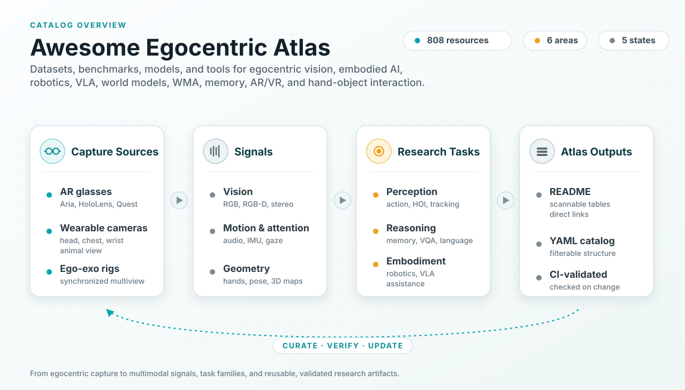
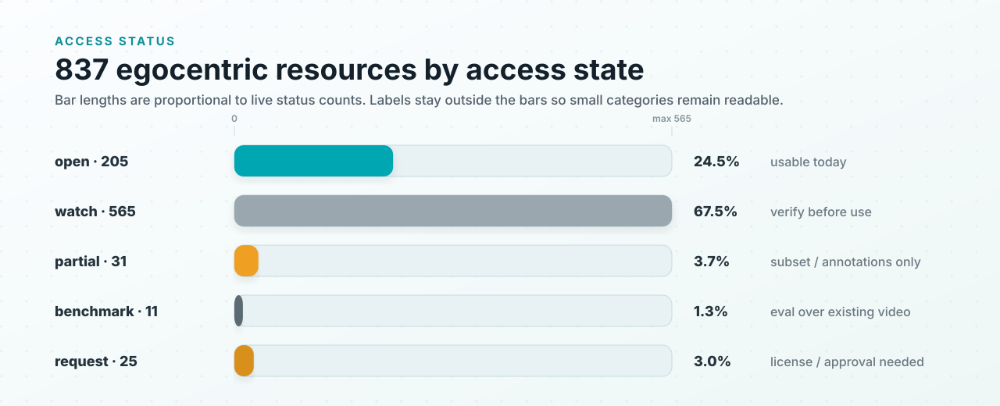
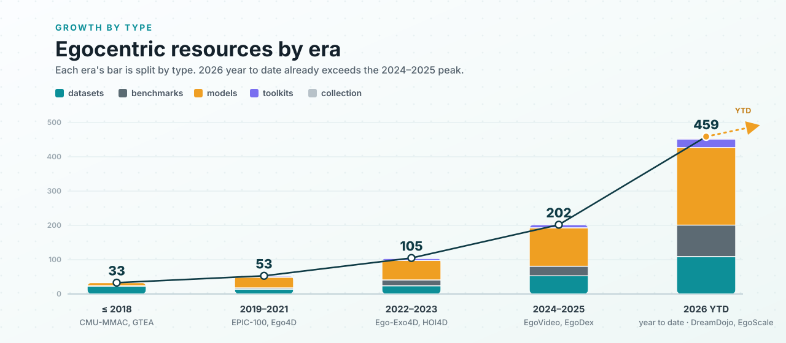

Awesome Egocentric Atlas
Curated egocentric AI datasets, benchmarks, models, and tools for first-person video, embodied AI, robotics, AR/VR, and long-context reasoning.
- 237
- egocentric resources
- 96
- datasets
- 67
- benchmarks
- 60
- models
- 13
- toolkits
Canonical YAML catalog
GitHub Pages + HF mirror
MIT licensed and citation-ready
Machine-checked catalog
Updated 2026-06-17

Catalog Explorer
Search the YAML-backed atlas by name, task, modality, status, kind, or research lane.
| Resource | Kind | Released | Status | Best Signal |
|---|
No resources match those filters.
Try a broader search, remove a lane, or reset the filters.
Research Lanes
Six entry points cover the major ways researchers use first-person data.
Access Reality
The atlas separates usable public resources from request-gated, benchmark-only, partial, and watchlist entries before you plan experiments.


Maintain the Atlas
Contributions go through a simple add, verify, validate workflow so README tables, YAML data, and the site stay aligned.